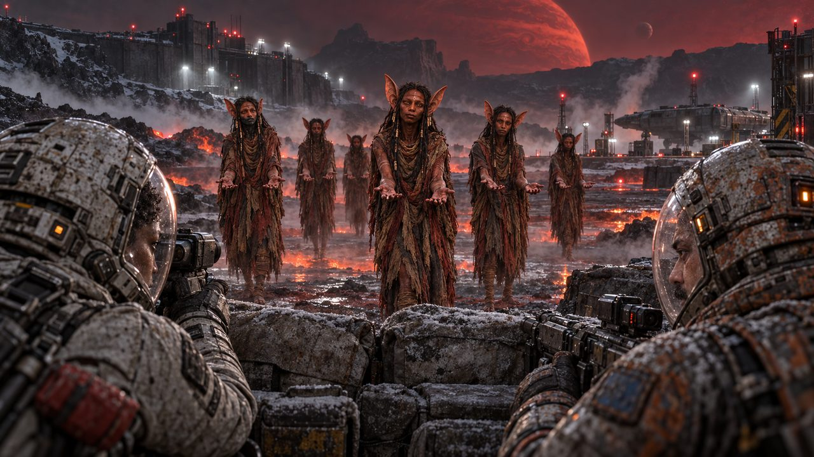

246a Preview plays: the controls hidden
Previewfrom The drowned quarter3 choices not walkedBranch mapClose preview Esc

Maren
Somebody lit a window down there. Nobody lives in the quarter now.
246b A click shows the controls
Previewfrom The drowned quarter3 choices not walkedBranch mapClose preview Esc
The Lantern Road
The drowned quarter
Maren
Somebody lit a window down there. Nobody lives in the quarter now.
246c Paused
Previewfrom The drowned quarter3 choices not walkedBranch mapClose preview Esc
The Lantern Road
The drowned quarter
Maren
Somebody lit a window down there. Nobody lives in the quarter now.
246d Narration off: each beat holds for its reading time
Previewfrom The drowned quarter3 choices not walkedBranch mapClose preview Esc

The Lantern Road
The drowned quarter
Far out, past the bell towers, the lighthouse turned once and went dark.
246e It stops for a choice of two
Previewfrom Six places at the table24 choices not walkedBranch mapClose preview Esc
The Red Quiet: First Contact
The first name on the board
1Return with Ana for Elsie
2Seal the shaft and leave Elsienot walked
Dev puts his hand on the emergency barrier. Ana waits beside me with the trauma case. The telemetry gives Elsie’s name in full.
246f A story without voices: no Narration
Previewfrom Six places at the table24 choices not walkedBranch mapClose preview Esc

The Red Quiet: First Contact
Open hands
They come across the cleared plain in a loose line. Through the scope I can see their hands. Every hand I can see is empty.
246g Branch Map: a lone link drawn plainly
The Red Quiet · First ContactArkeStudio
R
Branch map
First Contact · 15 scenes · 31 choices · 8 links
Story rules · authored values and conditionsInspect route
01
Six places at the table9 beats
02
Open hands9 beats
03
The last ordinary shift8 beats
04
Something below the floor7 beats
05 · C1
The first name on the board2 choices
06
The second lift10 beats
Go to the landing markers
Several weeks later
Check the lower inspection wall
Reach the evacuation landing
Return with Ana for Elsie
Seal the shaft and leave Elsie1 value
–Fit100%+Solid: walked · dashed: not walked
LinkArke
Open hands
Several weeks later
Open hands → The last ordinary shift
Plays throughNote
Several weeks later
Available whenAlways
RememberNothing
PreviewWalked
Edit link
Connected · First ContactThe Red Quiet · production-scoped
246h A beat’s Advance: no On tap
First Contact / Open hands
Beat 1 of 9
Who speaks
NarratorImaniWei
Line
They come across the cleared plain in a loose line. Through the scope I can see their hands. Every hand I can see is empty.
Voice
Not voiced
Advance
After the lineHold 4s
Movement
Slow pushDriftNone